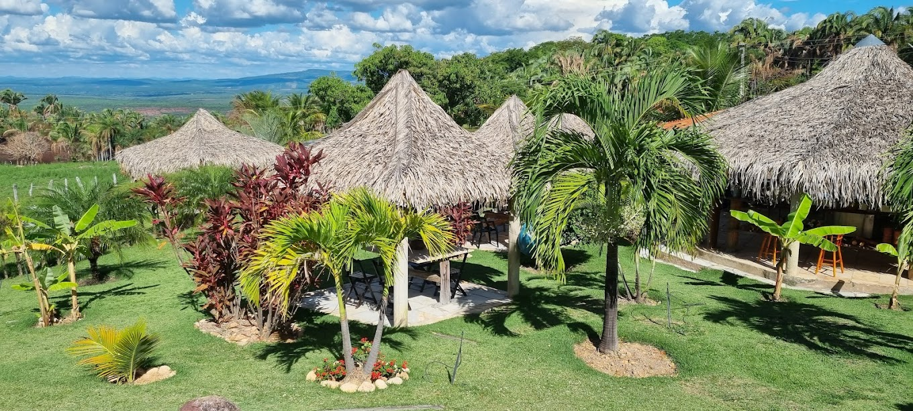

Fotos e Sua Localização


O Sítio Cocos está localizada em Barbalha, Ceará. Para mais detalhes, veja o mapa abaixo:
Desfrutar de um ambiente convidativo e selecionado é um dos principais atrativos para quem busca momentos de relaxamento e lazer
O Sítio Cocos está localizada em Barbalha, Ceará. Para mais detalhes, veja o mapa abaixo: